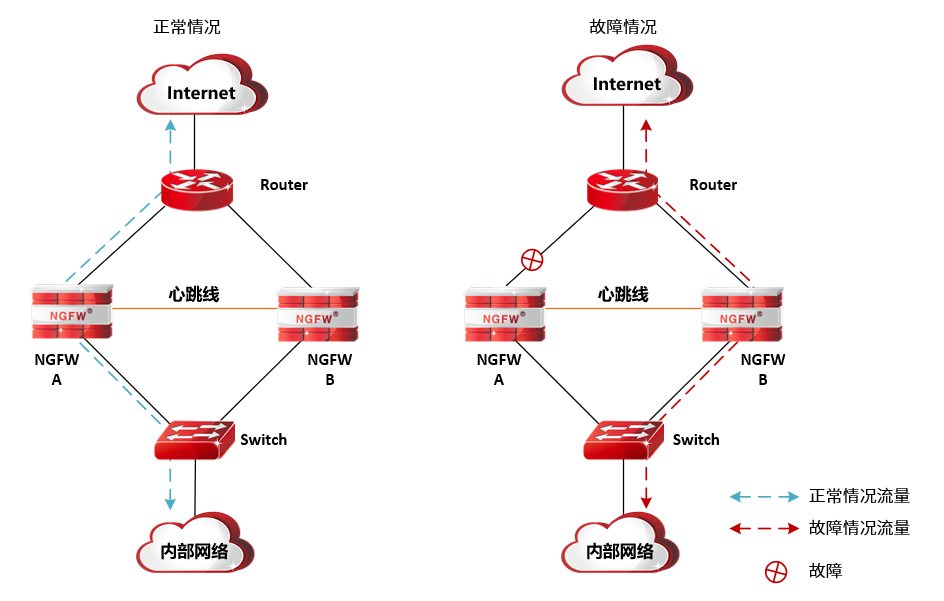
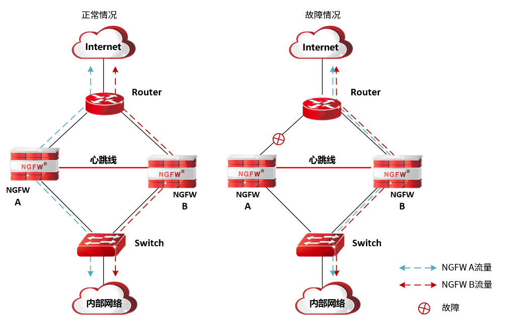
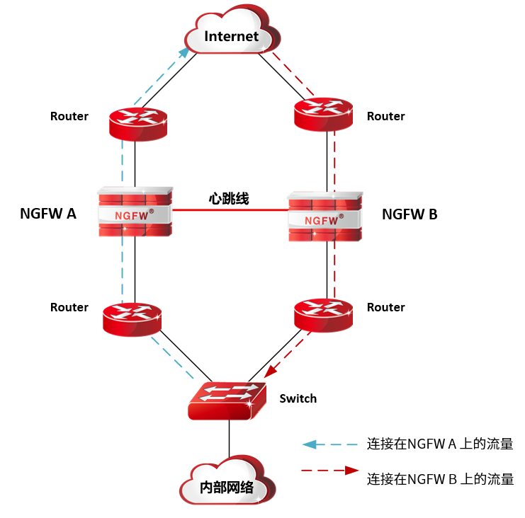
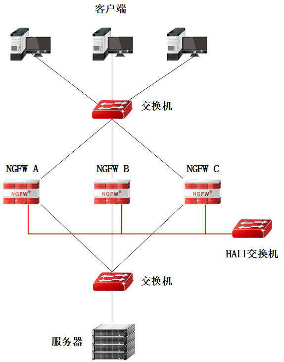

NGFW通过高可用性功能，确保在NGFW通信线路或设备故障时，也能保障业务网络数据的正常运转。NGFW的高可用性模块支持4种工作模式：主备模式（AS，Active-to-Standby）、连接保护模式（SP，Session Protect）、负载均衡模式（AA，Active-to-Active）和集群模式（cluster模式），这四种工作模式都通过心跳口同步配置信息、状态信息，确保在主设备故障时从设备能对用户完全透明地接替主设备工作。
l主备模式
NGFW以主备模式部署时，需要由2台NGFW设备组成管理组；管理组中有一台主设备处于工作状态，另一台设备处于备份状态。
主备模式由正常情况到故障情况的工作流量方向如下图所示。

说明：
1）正常情况下，主设备承担报文的处理和转发等任务，备设备处于热备状态，业务流量不经过备设备；主设备通过心跳口实时同步状态和配置信息到备设备。
2）当主设备的软件或硬件（不包括心跳口）出现故障时，处于备份状态的NGFW B立即以用户完全透明的情况下接替主设备的工作。
3）当主设备故障恢复时，会根据NGFW是否为抢占模式决定设备是否由备设备切换回主设备。管理组配置为抢占模式时，主设备故障恢复后，恢复原来的主设备为工作状态（此时为了防止因设备运行不稳定，导致其管理组中设备的角色频繁切换，需要配置适当的延迟时间，等待主设备工作状态稳定后再从备设备切换回主设备）。
配置主备模式，相关配置包括：
Ø配置心跳口和管理口属性。心跳口和管理口的接口属性必须要勾选“非同步地址”选项，否则心跳口和管理口的IP地址信息会在设备配置同步时被对方覆盖。
Ø配置通信接口。注意，两台设备互为备份的接口必须配置相同的IP地址，才能达到业务备份的目的。
Ø配置高可用性相关参数，并启用高可用性功能。
l负载均衡模式
NGFW以负载均衡模式部署时，需由2个管理组组成，每个管理组中有一台主设备处于工作状态，另外一台设备处于备份状态。同一台NGFW设备可在不同的管理组中作为主设备或者从设备，例如NGFW设备可以在管理组1中作为主设备，在管理组2中作为从设备。
负载均衡工作场景正常情况到故障情况的工作流量状态如下图所示。

说明:
1）正常情况下，管理组的设备独立工作，各自承担报文的转发等任务，通过心跳口相互同步对方的连接信息，互为对方的备设备。
2）当其中一台设备的软件或硬件（不包括心跳口）出现故障时，处于同一管理组中的另外一台NGFW立即对用户完全透明的情况下接替故障设备的工作。
3）当主设备故障恢复时，则根据NGFW是否为抢占模式，决定设备是否由备设备切换回主设备。管理组配置为抢占模式时，主设备故障恢复后，恢复原来的主设备为工作状态，为了防止因设备运行不稳定，导致其管理组中设备的角色频繁切换，需要配置适当的延迟时间，主设备工作稳定后再从备设备切换回主设备。
配置负载均衡模式，相关配置包括：
Ø配置心跳口属性。心跳口和管理口的接口属性必须要勾选“非同步地址”选项。
Ø配置其他通信接口。互为备份的接口必须配置相同的IP地址。
Ø配置高可用性的相关参数，并启用高可用性功能。
l连接保护模式
在连接保护模式下，所有防火墙均处于工作状态并且在网络部署层面相互独立，不区分主备，流量状态如下图所示（连接保护模式最多支持配置8台设备）。

说明：
1）当两台防火墙均正常工作时，由上下游的设备进行自由选路。如果内部网络在发送数据报文时，选择从NGFW A发送，在NGFW A上将建立数据报文的连接，此时若从网络中返回的数据报文选择从NGFW B上返回，在没有开启连接保护模式时，由于NGFW B上没有建立该网络连接，该报文将直接被丢弃；而在开启连接保护模式后，NGFW A会通过心跳口将连接信息同步到NGFW B上，将该连接的报文正常转发到内部网络。
2）当其中一台防火墙发生故障时，上下游设备经过协商后会将数据流通过另外的防火墙转发。
NGFW工作在连接保护模式下支持透明和路由模式，连接保护模式下不需要添加管理组，只需配置本地和对端地址即可。
配置连接保护模式，相关配置包括：
Ø配置所有接口属性。接口属性必须要勾选“非同步地址”选项，否则接口的IP地址信息会在设备运行状态同步时被对方覆盖。
Ø配置高可用性的相关参数，并启用高可用性功能。
l集群模式
集群模式部署时，由两台或多台设备组成，其中一台设备处干active状态，其他设备属于standby状态。集群功能启用时，处于active状态的设备接收到达集群系统的所有流量，将接收到的流量根据负裁均衡算法分发到其他健康状态正常的standby设备，当active状态设备出现导常时，集群系统将会自动选举出新的active设备接替原active设备的工作，达到不间断业务的目的。
主设备：集群中的分流机，监控组状态为ACTIVE。处理部分业务流量，以及根据分流策略分流流量到从设备。
从设备：除主设备之外的设备，监控组状态为STANDBY。承担主设备分发的业务流量处理工作。
集群部署图如下所示。

配置负载均衡模式，相关配置包括：
Ø配置心跳口属性。心跳口和管理口的接口属性必须要勾选“非同步地址”选项。
Ø配置业务接口地址。
Ø配置高可用性的相关参数，并启用高可用性功能。
NGFW高可用的配置包括：
|
²高可用性相关功能必须使用心跳口交换状态监测及探测信息，NGFW上除管理口以外的以太网接口都可以做为心跳接口。 ²使用高可用性模块进行冗余备份时，两台防火墙的型号及软件版本必须一致，否则在其中一台故障时，无法保证将业务正常切换到另外一台设备。 |

l状态
l配置